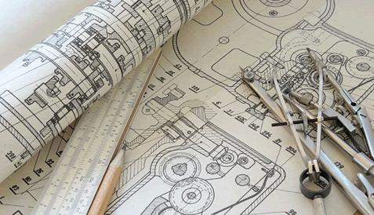

CNC Machining, Design and Engineering
ADCO CNC
is a custom precision machine shop. Actually more than just a CNC machining shop – we do a
full life cycle
of precision products – from idea to
Research and Development
to
Engineering
to
Design
to
CNC Machining
to
Quality Control
. We are known for our capabilities of
Reverse Engineering
of parts and equipment. We do CNC Machining in large volumes as well as
one-offs
and
Prototypes
. From projects with every little detail strictly defined to those awkward difficult jobs for which we solve problems and do redesign for our customers to make
every
job perfect, exactly as you wanted it, from drawing to door. Besides
CNC Machining
, we do
Batch
work,
R&D
projects,
Engineering
and
Design
. We pride ourselves in
Integrity
and
Customer Service
and we are committed to
Quality You Can Trust
.
We serve a wide range of industries:
Aviation, Aerospace, Medical equipment, Military, Marine, Automobile, Petroleum, Oil and Gas, Wood processing, Forestry, Agricultural machines and equipment, Architectural equipment and parts, Energy sector, Fluid Control, Electronics, Construction, Machining, Chemical industry, Education, Fishery, Electrical parts, Commercial equipment, Food and Dairy, Power generation, Sports and recreation, Government agencies, and so on.We Machine:
Nozzles, Engine parts, Robot parts, Pulleys, Shafts and Bushings, Electrical equipment, Precision prototypes, Mechanical Actuation Components, Fuel System Components, Power Generator Parts, Electronics Enclosures, Structural Panels, Military Components, Electro-Mechanical Parts, Medical Equipment & Instrumentation, Adaptors, Adjusters, Arbors, Architectural Parts, Assemblies, Axles, Back Plates, Balancers, Brackets, Bushes, Cam Followers, Camera Parts, Cams, Cam-shafts, Caps, Chambers, Connecting Rods, Connectors, Counter-weights, Couplings, Covers, Crimping Tools, Custom Acme Nuts, Custom Bearings, Custom Blades, Custom Clamps, Custom Cutter Bodies, Custom Fasteners, Custom Tools, Custom Washers, Cylinders, Dampers, Discs, Dove Tails, Drums, Electrodes, Feet, Fingers, Fittings, Frames, Grippers, Guides, Handles, Heat sinks, Hinges, Holders, Housings, Hubs, Hydraulic Manifolds, Idlers, Jigs, Joints, Keys, Knobs, Leveling Screws, Lids, Limiters, Locking Devices, Mandrels, Machining Fixtures, Modules, Motor Mountings, Mounts, Needles, Nests, Nozzles, Pads, Pickers, Pillow Blocks, Pins, Pivots, Plugs, Plungers, Pneumatic Manifolds, Precision Struts, Rails, Retainers, Rods, Rollers, Seals, Shafts, Sleeves, Sliders, Spacers, Specialized clamps, Spools, Sprockets, Stand-offs, Stands, Studs, Supports, Terminals, Testing Fixtures, Torque Tubes, Tracks, Valve Parts, Wear Plates, Wedges, Welding Fixtures, Weldments, Wheels and much more. (scroll up)
Precision CNC Turning
ADCO CNC provides high quality close tolerance custom CNC Turning. HAAS Lathes can fulfill a multitude of turning processes, such as contour, form, taper, and straight turning, as well as tapping, broaching, boring, counter boring, and internal & external threading. In addition, our equipment features live tooling along with a variety of in-house fixturing and tooling options. We turn parts of many different sizes, with diameters ranging from 0.25" to 20", part lengths up to 40", all working within tolerances of ±0.0002".
CNC Turning Processes:
Contour Turning, Form Turning, Taper Turning, Straight Turning, Internal Threading, External Threading, Tapping, Broaching, Boring, Counter Boring
Materials (Metals):
Alloy Steels, Aluminum Brass, Copper, Stainless Steel, Titanium, Inconel, Hastelloy, Monel
Materials (Non-Metals):
Delrin, UHMW, Nylon, PTFE, Carbon Fiber Composites(scroll up)

Precision CNC Milling
ADCO CNC provides high quality close tolerance custom Milling. HAAS Mills providing milling, facing, pocketing, profiling, thread milling, and countersinking. In addition to our comprehensive custom CNC milling services we provide in-house fixturing and tooling. We mill parts in a wide variety of sizes: up to 90" in length, 30" in width, and 25" in height and our milled parts can be held to tolerances of ±0.0002".
CNC Milling Processes:
Milling, Facing, Pocketing, Profiling, Thread Milling, Countersinking
Materials (Metals):
Alloy Steels, Aluminum Brass, Copper, Stainless Steel, Titanium, Inconel, Hastelloy, Monel
Materials (Non-Metals):
Delrin, UHMW, Nylon, PTFE, Carbon Fiber Composites(scroll up)

CNC Design and Engineering
Do you have a raw idea that needs engineering? A requirement for a part or a tool that needs design? A physical prototype in metal or plastic that needs to be replicated? Need to formalize existing design into drawings, ready for a machinist to do CNC Machining? From brainstorming to the final design, drawings and machined part - we do it all!
Customers often come to us with metal or plastic parts for CNC Machining but they only have a physical sample that needs reverse engineering. We do it well. From precise measurements to solid models, to engineering how it should work to improving the design and to making formal drawings. And then of course CNC Machining for the parts that we designed.
It is also often when customers come to us with just an idea and we do all the rest.
We do CNC Machining in large volumes as well as
one-offs
and
prototypes
.
CNC Machining Process Problem Solving
We are good at helping customers with those awkward difficult jobs for which we solve problems and do redesign when not enough details are predefined.
CNC Machining Process Redesign and Enhancement
Before the actual CNC Machining, we often redesign some elements or a full redesign with the customers to make every job perfect, exactly as you wanted it, from drawing to door.(scroll up)
CNC Research and Development
When the customer knows exactly what needs to be machined but there are no formalized drawings yet or it is unknown how to do it – we do CNC Design and Engineering . Although when the customer only has goals and objectives but does not have enough information or know-how and does not know what needs to be machined to achieve those goals and objectives – we do Research and Development . It may include material research, case studies, market research, durability testing, cost efficiency studies, new technology viability studies, and even patent research with our partners.
ADCO CNC Manucacturing Inc - Quality You Can Trust!
We are much more than just a CNC Machining shop, indeed.(scroll up) (scroll up)

Unique custom-made 3D Gifts and Promotional Items
We make very special gifts for almost any occasion. Corporate Gifts, Personal Gifts, Promotional Items, Medals, Awards, 3D art plates and so on. When you want something special for a very special person, we will make a unique 3D design from a regular photo. Read more here >>
ADCO CNC Manucacturing Inc - Quality You Can Trust!
We are much more than just a CNC Machining shop, indeed.